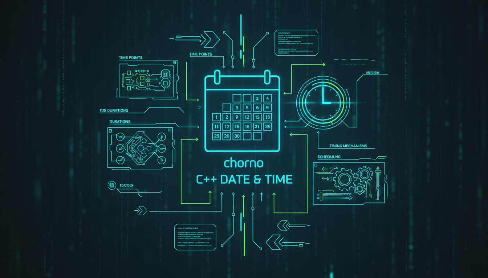

chrono, system_clock, time_point, duration, форматування

Бібліотека <chrono> надає інструменти для роботи з часом.
#include <iostream>
#include <chrono>
#include <thread>
int main() {
using namespace std::chrono;
// Поточний час
auto now = system_clock::now();
// Часова точка
auto start = high_resolution_clock::now();
// Затримка
std::this_thread::sleep_for(milliseconds(100));
auto end = high_resolution_clock::now();
auto duration = duration_cast<microseconds>(end - start);
std::cout << "Час: " << duration.count() << " мкс" << std::endl;
// Дurations
seconds s(10);
minutes m(5);
hours h(2);
std::cout << "5 хвилин = " << duration_cast<seconds>(m).count() << " секунд" << std::endl;
return 0;
}